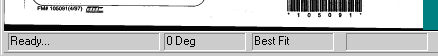
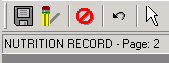
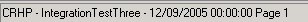

The viewer provides two status bars that can be displayed or hidden.
The standard status bar displays at the bottom of the viewer window and includes the program status, the document image rotation status, and the zoom status. For example:

The extended status bar appears below the toolbars and contains document information. Depending on information passed from the calling application (ICU or ROI), the extended status bar optionally displays the document name, subtitle, document date and time stamp, and the current page number. Examples are:

or

To show or hide the status bars, select Status Bar (for the standard bar) and/or Extended Status Bar from the View menu. A checkmark next to the menu command indicates the item is enabled.
OneContent™ Release 17.6.2 - August 2018
This page contains Hyland Software, Inc. proprietary information and is not to be duplicated or disclosed to unauthorized persons.